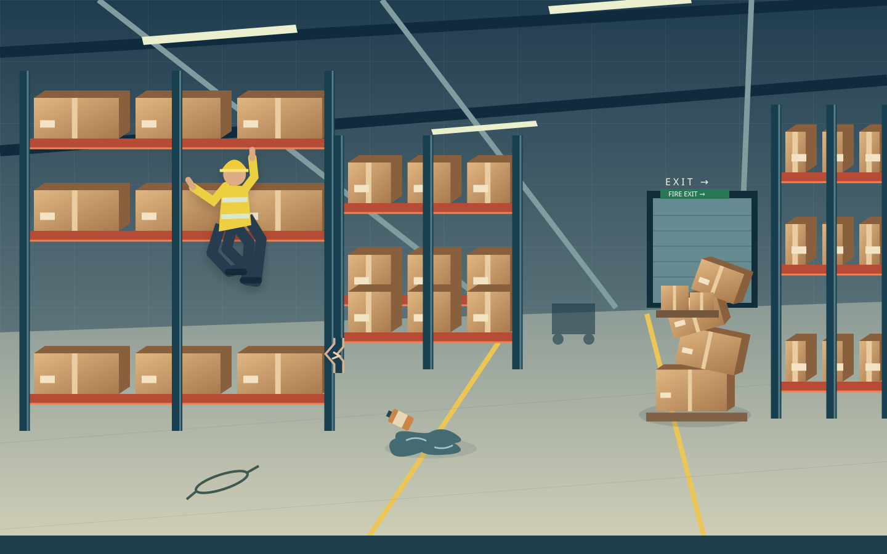

0 of 6 explored

Move to explore · click to inspectTap · hold to magnify
Tab to each inspection area; its outline appears on focus. Arrow keys move between areas and magnify the detail. Enter or Space opens a decision. Escape returns to the scene.